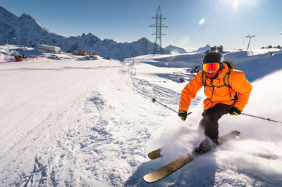
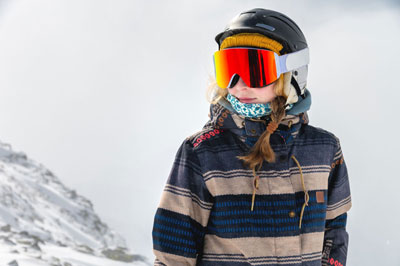
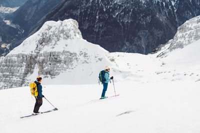
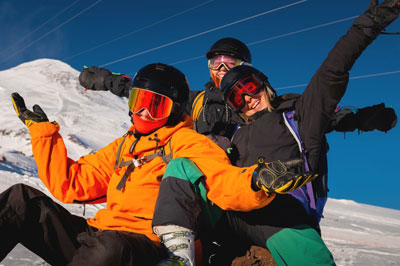
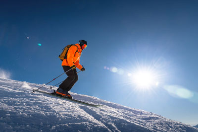
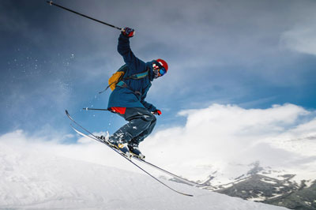

Our website provides a comprehensive list of the best ski resorts in the US, including traditional family favorites and charming ski towns situated in every snowy corner and serene location. Among them, you'll find Teton Village in Wyoming, Steamboat Springs in Colorado, and Alta in Utah. The renowned ski areas of Park City, Utah, and Big Sky, a prime ski destination in Montana, both pose a rich history that's as palpable as the groomers. However, the challenge for many is deciding which resort to visit based on factors such as reader surveys, terrain options, including challenging backside trails, snowboard parks, customer satisfaction, and overall skiing experience. One must also consider the shopping and nightlife as well as wide-ranging lodging options. In comparison to other notable ski resorts like Deer Valley Resort in Utah, Snowbird in Utah and Sun Valley Resort in Idaho, it's essential to take into account the quality of customer service alongside amenities, like food bars at the base of the resort. The goal is to ensure that they offer everything - or should we say, lots of things - a winter sports enthusiast may look for. Check out our article for detailed information on the top-rated ski resorts, including their unique features, amenities, and trip-planning tips to help you make an informed decision for your next skiing adventure, regardless of the ski season.
When it comes to planning a winter getaway, especially with kids, finding the perfect ski resort can make all the difference. Whether you're an adrenaline junkie seeking thrill on challenging slopes at locations like the Big Sky with a snowboard under your feet or a family looking for a cozy retreat surrounded by natural beauty in Deer Valley Resort or Snowbird, the top-ranked ski resorts in the US offer something for everyone. From the luxury lodging options in Teton Village to the vibrant nightlife in Steamboat Springs, and the world-class skiing at Alta, there's a variety of experiences to choose from. In comparison to Sun Valley Resort, these resorts have been carefully evaluated based on a range of factors, including the ski area's size, accessibility, the variety on the food bars, family-friendly programming, and overall atmosphere. So, without further ado, let's take a closer look at some of these premier winter destinations and their rich history.
One such ski resort that stands out among the best - in part due to its impeccable customer service - is Sugarloaf Resort situated in Maine's pristine mountains. Boasting an expansive ski area, including groomers and thrilling backside trails that rank among the largest on the East Coast, it offers a shopping experience and nightlife comparable to the lively Teton Village and Steamboat Springs. It's a popular choice among families, snowboarders, and seasoned skiers alike.
Nestled in the majestic mountains of Maine, Sugarloaf Resort offers a wealth of lodging options rivalling those at places like Alta. It's an enchanting retreat for winter adventure seekers and aspiring ski towns. With its breathtaking panoramic views of unspoiled wilderness and towering peaks covered in snow, this resort captures the essence of a true winter wonderland remaining in comparison with Sun Valley Resort and Deer Valley Resort.
Sugarloaf boasts over 1,230 acres of skiable terrain with trails catering to all skill levels, from gentle slopes for beginners to challenging runs for seasoned experts. Its well-groomed trails and vast glades, including thrilling backside runs, provide endless opportunities for skiers and snowboarders to carve their way down, giving a run for its competition like Sun Valley Resort, Big Sky, and resorts in Steamboat Springs.
Picture yourself and your kids gliding through fresh powder at resorts like Sun Valley Resort while surrounded by the tranquility of nature in a region as handsome as Utah's Deer Valley Resort. Then, imagine ending your day with shopping excursions in the vibrant Teton Village or sampling the exciting nightlife in Steamboat Springs.The crisp mountain air fills your lungs as you navigate the tree-lined glades, experiencing an exhilarating sense of freedom and connection with the pristine environment around you. With your lift ticket in hand, you board the chairlift, preparing for a ski-in ski-out adventure down the slopeside trails that will surely be the highlight of your vacation.
Beyond its incredible skiing and snowboarding offerings, Sugarloaf Resort is renowned for its exceptional amenities, like the food bars that serve as a much-needed energy refill station where you can exchange your day pass for a hearty meal. Alongside this, the resort features cozy lodges where visitors can unwind and relax after a day on the slopes, similar to the comforting environment found in the legendary ski towns like Park City. In comparison to other renowned resorts such as Deer Valley Resort and Big Sky, the customer service at Sugarloaf Resort remains steadfastly committed to ensuring a premium experience for all its guests.
Imagine sitting by a roaring fireplace in a lodge at Big Sky Resort, sipping hot cocoa, overlooking the picturesque ski trails. With your snowcat parked outside, you share stories of your mountain adventures in the steep backcountry of Ketchum with friends and family. The warmth from the fire envelops you as you revel in the cozy ambiance, finding solace and contentment in this winter sanctuary, where ski-out tours and slopeside attractions await outside your door.
Sugarloaf, like the world-renowned ski areas of Park City, Utah, or Big Sky Resort in Montana, prides itself on its commitment to providing a memorable experience for guests of all ages. From tubing and ice skating to snowshoeing and Nordic skiing, there are plenty of courses to follow and things to keep everyone entertained during the ski season, each requiring a different kind of lift ticket or pass. The colossal history of these resorts only accentuates the richness of the experience they offer.
If you're looking for a ski resort that combines world-class skiing with a serene alpine setting, Sugarloaf Resort in Maine is undoubtedly a top choice. Imagine the thrill of a drive from the peaceful Idaho scenery of Ketchum backcountry to the bustling city landscape of Denver, en route to your favorite ski runs at Big Sky Resort, neighboring iconic attractions and magnificent landscapes along the road.
Just as Sugarloaf offers an unforgettable Maine charm, nestled in the magnificent Rocky Mountains, resorts such as Colorado's Steamboat and Aspen Highlands truly embody the essence of a winter wonderland. Sometimes comparing the steep and exciting courses at Big Sky Resort or Ketchum, these ski destinations provide an unforgettable experience. Whether you're vacationing in the luxurious accommodations of Aspen Snowmass or cruising down the powdery slopes of Lake Tahoe, Vail, or Breckenridge, every corner of North America features a winter wonderland waiting for you.
Imagine standing at the top of Mount Werner, feeling as if you're on top of the world – an exhilarating feeling that mirrors the thrills experienced while skiing the steeps at Ketchum, Idaho. As you carve your way down the slopes of Big Sky Resort, surrounded by perfectly groomed trails and fluffy powder, you'll understand why places like Steamboat, Jackson Hole, and Taos Ski Valley are consistently ranked as some of the best ski resorts in the US.
But it's not just the exceptional skiing that attracts visitors year after year. Similar to the charming Western vibe in Ketchum, the town surrounding Steamboat Resort exudes a unique allure. After claiming your lift ticket and hopping on the chairlift, you'll instantly understand why so many choose to envelop themselves in a slopeside vacation here, be it a ski-in ski-out experience or simply enjoying the serenity of the snow-covered landscape.After a day on the slopes using your ski pass, indulge in the local delicacies or unwind with a soothing soak in one of the natural hot springs. The town is also famous for its winter carnival events, with ski jumping competitions and a dazzling fireworks display as star attractions. As part of the apres-ski experience, you can return to your cozy hotel room and relax after an exciting day on the mountain.
Whether you're seeking thrilling adventures on the mountain or searching for rental equipment and lessons on the slope, idyllic après-ski spots such as Steamboat Resort and the little hideaways like Aspen Highlands, deliver on all fronts. Much like a trip down the ski trails of Big Sky Resort or a tour through Ketchum's idyllic backcountry, it's a destination that envelopes you in natural beauty, welcomes you with genuine hospitality, and leaves you with lifelong memories.
Situated in the heart of New Hampshire's White Mountains, Cannon Mountain, similar to the Colorado beauty, Aspen Snowmass, and Montana's Big Sky Resort, is cherished by locals and visitors alike for its awe-inspiring scenery, impeccable trails, and steep courses that echo the thrills of skiing in Ketchum.Basking in the glory of towering peaks and sweeping vistas, this ski resort, much like the renowned Mammoth Mountain, offers a unique skiing experience that's a notch above the rest, quite comparable to the ones offered at Idaho's Sun Valley or Aspen Highlands. The advantage of such locations is the blend of beauty and the thrill that stages an unforgettable experience for powder hounds. In addition to your ski pass, you may want to consider equipment rentals and lessons to fully enjoy these stunning spots.
Cannon Mountain, much like the intense terrains of Palisades Tahoe, is renowned for its challenging terrain that caters to both intermediate and advanced skiers. Imagine yourself as you glide effortlessly through decorated aisles of pristine snow, soaking yourself in the serene beauty of the encompassing natural landscape. Mimicking the layout of the equally exhilarating Aspen Highlands, the mountain becomes a playground for thrilling descents and diverse skiing experiences, giving an edge to adventurous skiers. This resort, with its hotel room accommodation and short lift lines, is a coveted destination among adventure seekers.
The breathtaking views from Cannon Mountain's summit or the picturesque ski runs of Aspen Highlands are hard to overstate. From these lofty vantage points, akin to the scenic beauty seen from Mount Mansfield, you can behold the majestic sights of the White Mountains National Forest and the rugged terrain of Colorado respectively. The beauty mirrors Mother Nature's artistic touch impeccably and reminds you why you journey into the mountains – the heart of Taos Ski Valley or the peaks of North America – to feel small, yet connected to something infinitely larger. Beyond the slopes, enjoy the après-ski scene at your hotel, offering both dining and relaxation to complete your day.
Beyond the slopes, much like the après-ski scene of the Stowe Mountain Resort in Vermont, Cannon Mountain offers an array of activities and amenities that enrich your winter sojourns. Similarly, the ones provided at Lake Tahoe echo this sentiment, where the accommodations, events and rentals are as striking as their stunning landscapes. After a long day of skiing, feel free to explore the nearby Franconia Notch State Park or enjoy a leisurely tram ride. Alternatively, savor a warm drink by a flickering fire in one of the cosy hotel rooms, creating unforgettable memories in the winter weather.
The United States, home to several topping ski resorts like Aspen Snowmass, Lake Tahoe, Vail, Jackson Hole, and Breckenridge in various cities, sees new ski rental and lesson destinations emerge each year as burgeoning stars in the winter sports scene. With a broad range of events and après-ski activities to engage in, you'll be making the most of your ski pass at any one of these resorts.Offering unique experiences coupled with awe-inspiring scenery - a course set with thrilling terrain and world-class amenities, Whitefish Mountain Resort's strength lies not just in its ability to capture the essence of skiing but also in the price-value proposition it affords its visitors. Whether you're sliding on the slope in your shiny skis or on the side paths with your secure boots, it's time to explore this hidden gem steadily gaining recognition among skiing enthusiasts: Whitefish Mountain Resort.
Whitefish Mountain Resort, nestled in picturesque Montana, is a spot where skiers and snowboarders, regardless of their boots or skis, can have an unforgettable experience surrounded by stunning natural beauty. Boasting a diverse slope offering for all skill levels, the resort's uncrowded trails ensure uninterrupted enjoyment on the mountain. On this course, you can choose from a variety of runs that cater to everyone from beginners to seasoned experts. From there, you can't help but drink in the beauty as Whitefish Mountain Resort, situated in the region's heart, emerges from the mountainside. You will find it nestled amidst the Adirondacks, where Montana boasts an enticing mix of groomed corduroy for intermediates and challenging glades reminiscent of Nevada's rugged landscape.
For those seeking extra excitement, seldom experienced even in the wonderful weather of Oregon, the resort features 105 marked runs and the Nevada-like back bowls. And remember, you won't have to pay a steep price to enjoy all these. Lovers of craft beer will strike gold with the après-ski options provided here. The resort also showcases two terrain parks that cater to adrenaline junkies’ needs at all ages. From jumps and rails that bring to mind Salt Lake City's adventurous features to freestyle features, there's no shortage of options at Mt. Montana to challenge even the most seasoned skiers and snowboarders.
When you decide to hang up your skis or boots for a moment, taking a break from the slopes of Whitefish Mountain Resort will lead you into a charming village atmosphere. Reminiscent of Stowe Mountain Resort or the cosmopolitan Salt Lake City, you'll find rustic lodges, cozy restaurants, and unique shops that exude a welcoming feel. After a day spent sliding on the mountain, you can relax with craft beer or hearty local cuisine, or unwind next to a crackling fire while sharing travel stories with fellow winter enthusiasts.
Whether you're a seasoned skier or new to the sport, Whitefish Mountain Resort, bearing the reputation and charm of regions such as Vermont, is a rising star that should not be overlooked. Just like in the cities of Salt Lake City or Oregon, or amidst the scenic backdrop of the Adirondacks, its combination of pristine landscapes, diverse terrain, and warm hospitality make it an ideal getaway. The resort offers unparalleled access to an authentic winter experience in the heart of Montana, accompanied by a tram experience that lets you drink in the serene weather while enjoying the panoramic view from the mountainside.
Now that we've explored one of the rising stars in the US ski resort scene, it's time to dive deeper into this hidden gem: Whitefish Mountain Resort - which exudes a Vermont-like charm in every corner, just like Stowe Mountain Resort or the stunning Adirondacks.
Open your mind to a winter wonderland as you venture west to discover Whitefish Mountain Resort, an exhilarating retreat tucked away in the majestic peaks of the northern Rocky Mountains. Surrounded by an abundance of trees, this hidden gem, akin to a refreshing oasis nestled in the heart of Nevada, is a little-known secret among winter enthusiasts and a name resort in the tree skiing world. This paradise offers a truly unforgettable escape for those craving adventure in unspoiled beauty for a very good reason.
Boasting an impressive vertical drop of over 2,353 feet and 3,000 acres of skiable terrain marked by lines of pristine trees, Whitefish Mountain Resort caters to all levels of skiers and snowboarders, from newcomers to skilled adults. With an average annual snowfall of over 300 inches, powder days akin to Vermont's ski areas are frequent here, leaving fresh tracks for those seeking pure bliss on untouched slopes.
But what sets Whitefish Mountain Resort apart from other destinations like Vermont is its rustic charm and welcoming atmosphere. The laid-back vibe and friendly locals, akin to a quaint mountain village in Nevada, create a sense of community, making visitors feel right at home, which is a reason why it stands out among other name resorts. The resort's après-ski options and craft beers also contribute to the warm and relaxing ambience.Picture yourself savouring hearty mountain cuisine in one of the resort's quaint eateries after a thrilling day of tree skiing on the slopes. Indulge in locally sourced ingredients while taking in panoramic views of Glacier National Park. As dusk falls, gather around a crackling bonfire under the cool canopy of the west's looming trees and listen to the tales of fellow adventurers, sharing experiences that will be cherished for a lifetime.
Beyond the slopes, Whitefish Mountain Resort offers a plethora of winter activities to suit every taste. Embark on a snowshoeing adventure through pristine forests teeming with trees, go ice skating on an outdoor rink, or take a breathtaking scenic gondola ride tracing the lines of the mountains to marvel at the scenic beauty that surrounds this hidden sanctuary. The resort provides access to a variety of activities, living up to the reputation of an adventurous Vermont-like ski region.
With its vast, natural runs lined with trees, Whitefish Mountain Resort truly embodies the spirit of not only Montana's secret snowy wilderness but also resembles the west's skiing paradise of Telluride Ski Resort in the U.S. Offering breathtaking landscapes, Champagne powder, and unmatched recreational opportunities, it's no surprise that mountain destinations such as these are gaining recognition as some of the top winter getaways in the United States.
Nestled in the heart of the scenic Adirondack Mountains, similarly to the wonderfully situated Telluride, Whiteface Mountain stands as an iconic landmark for skiing enthusiasts and nature-lovers alike. This renowned ski resort in Upstate New York offers a captivating winter experience that combines breathtaking views with thrilling slopes lined with eastern pines. With its proximity to Lake Placid, the site of the 1980 Winter Olympics, Whiteface Mountain boasts a rich skiing heritage that attracts visitors from far and wide, just like Telluride ski resort. Its stunning terrain, expert-level runs, and an authentic ski town atmosphere make it a must-visit destination for those seeking an adrenaline-pumping adventure on the East Coast.
Beyond the slopes, Whitefish Mountain Resort offers a plethora of winter activities to suit every taste. Embark on a snowshoeing adventure through pristine forests, go ice skating on an outdoor rink, or take a breathtaking scenic gondola ride to marvel at the scenic beauty that surrounds this hidden sanctuary. The resort provides access to a variety of activities, living up to the reputation of an adventurous Vermont-like ski region.
With its vast, natural runs, Whitefish Mountain Resort truly embodies the spirit of not only Montana's secret snowy wilderness but also resembles the skiing paradise of Telluride Ski Resort in the U.S. Offering breathtaking landscapes, Champagne powder, and unmatched recreational opportunities, it's no surprise that mountain destinations such as these are gaining recognition as some of the top winter getaways in the United States.
Nestled in the heart of the scenic Adirondack Mountains, similarly to the wonderfully situated Telluride, Whiteface Mountain stands as an iconic landmark for skiing enthusiasts and nature-lovers alike. This renowned ski resort in Upstate New York offers a captivating winter experience that combines breathtaking views with thrilling slopes. With its proximity to Lake Placid, the site of the 1980 Winter Olympics, Whiteface Mountain boasts a rich skiing heritage that attracts visitors from far and wide, just like Telluride ski resort. Its stunning terrain, expert-level runs, and an authentic ski town atmosphere make it a must-visit destination for those seeking an adrenaline-pumping adventure on the East Coast.
Imagine yourself standing at the summit of Whiteface Mountain, surrounded by picturesque vistas of snow-covered peaks, much akin to those in Telluride. The brisk mountain air invigorates your senses as you prepare to run through the Champagne powder and tackle challenging slopes. Whether you're a seasoned skier or just starting out, resorts such as Whiteface Mountain and Telluride Ski Resort offer a variety of trails suitable for all skill levels.
Now that we've explored the allure of Whiteface Mountain in New York, and given a nod to U.S destinations like Telluride, let's turn our attention to planning your ultimate ski trip to this winter wonderland.
Planning a ski trip, whether it's to Whiteface or perhaps a spot like Telluride, can be an exciting endeavor filled with anticipation and adventure. To make the most of your time, careful preparation is key.
First and foremost, consider when you want to visit. The winter months from December to March offer optimal ski conditions and plenty of fresh, Champagne powder for enthusiasts seeking the best snow experiences. However, bear in mind that weekends and holidays tend to be busier, so if you prefer fewer crowds, consider visiting during weekdays or off-peak times.
Next, think about accommodation, or lodging; Ease of access to the mountains is crucial. Mountain towns like Lake Placid and Telluride offer a range of options, from cozy lodges and hotels to charming bed and breakfasts.
When it comes to equipment, you have two options: bring your own or rent on-site. If you have your gear, ensure it's in good condition and suitable for the terrain at your chosen resort, be it Whiteface Mountain or another resort like Telluride Ski Resort in the U.S.
Next, think about accommodation. Lake Placid offers a range of options, from cozy lodges and hotels to charming bed and breakfasts. Consider your budget and preferences to find the perfect place to rest after a thrilling day on the slopes.
When it comes to equipment, you have two options: bring your own or rent on-site. If you have your own gear, make sure it's in good condition and suitable for the terrain at Whiteface Mountain. Alternatively, if you prefer the convenience of renting, the mountain has several rental shops where you can find top-quality equipment.
Choosing the right gear is as crucial as selecting the right tool for any job. Just as a carpenter wouldn't use a hammer for delicate precision work, skiers need equipment that suits their skill level and the mountain's conditions.
Lastly, consider purchasing lift tickets in advance to save time and potentially avail yourself of discounted rates. Whiteface Mountain offers various ticket options, including multi-day passes and special packages. Research these options ahead of time to ensure you get the best value for your money.
Now that we've covered some essential aspects of planning your ski trip to Whiteface Mountain, let's take a closer look at the diverse ski terrain and experience ratings offered by this remarkable resort.
When it comes to choosing the best ski resort, one of the crucial factors to consider is the ski terrain and experience ratings. The terrain varies from resort to resort, catering to different skill levels and preferences. Some resorts are renowned for their challenging, expert-level slopes, while others offer a more relaxed experience suitable for beginners or families.
For advanced skiers seeking a thrilling adventure, resorts with steep and ungroomed terrains might be the ideal choice. These resorts often boast deep powder conditions, allowing experienced skiers to test their skills on challenging runs and explore exciting off-piste areas. Imagine carving through untouched snowy glades or navigating through narrow chutes that require precise technique and control.
On the other hand, beginners or those who prefer leisurely skiing can opt for resorts with well-groomed trails and gentle slopes. These resorts often provide extensive beginner areas with dedicated instructors to assist newcomers in mastering their techniques. Picture yourself gracefully gliding down wide-open slopes as you gain confidence and improve your skills.
For instance, Snowmass in Colorado is known for its extensive range of groomed runs suitable for all levels of skiers. With over 3,000 acres of skiable terrain, it offers something for everyone - from gentle slopes for beginners to challenging black diamond runs for experts. This diversity ensures that every skier can find enjoyment according to their ability level.
Apart from terrain difficulty, another important aspect is the overall experience a ski resort offers. Some resorts focus not only on providing excellent skiing opportunities but also on creating an immersive winter wonderland atmosphere. These resorts may have charming village areas filled with shops, restaurants, and cozy lodges where you can enjoy après-ski activities and socialize with fellow skiers.
Furthermore, on-mountain amenities such as quality dining options, luxurious day lodges, state-of-the-art ski lifts, and efficient lift systems can greatly enhance the overall skiing experience. Imagine taking a break from skiing to indulge in gourmet cuisine at a mountainside restaurant or relaxing in a luxurious lodge with stunning panoramic views.
Now that we've explored the importance of ski terrain and experience ratings, let's dive into the top-ranked ski resorts in the US and discover the unique features and highlights that make them stand out. So, grab your winter gear and get ready for an exhilarating journey through the best ski destinations in the country.